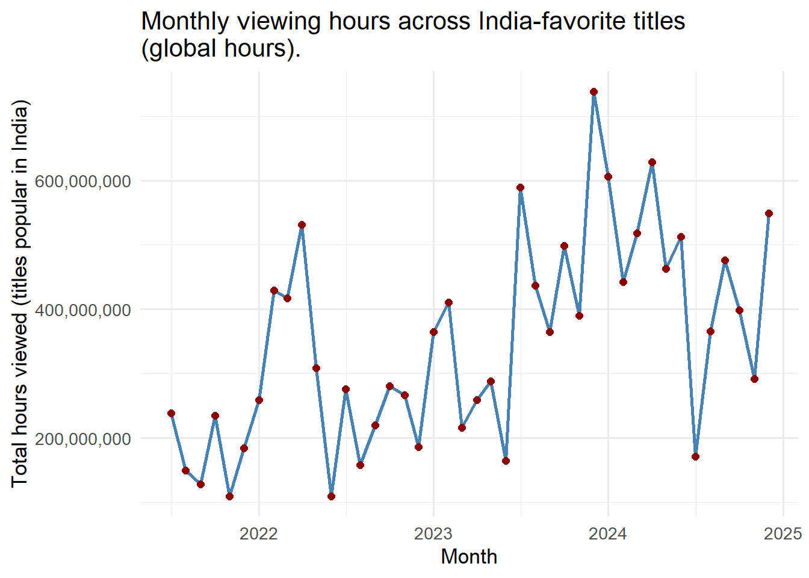
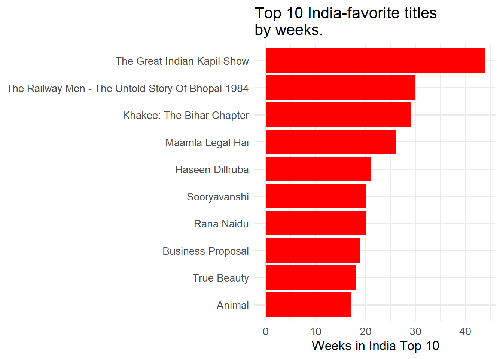
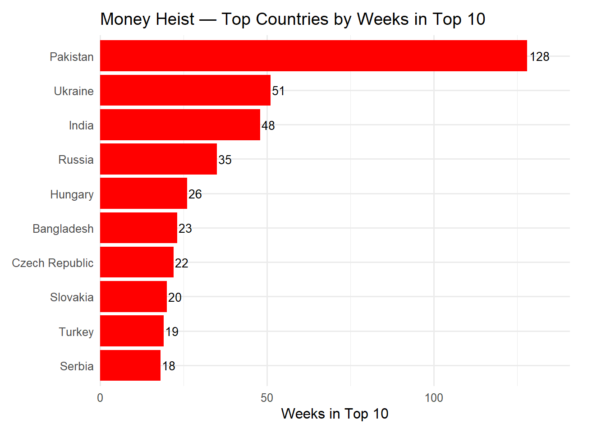
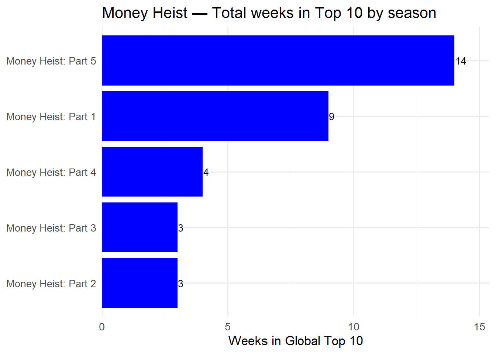

This project explores the most popular programming on Netflix. It focuses on three main aspects:
Data Cleaning and Visualization — inspecting and preparing the raw Netflix Top 10 datasets.
Exploring Key Questions — answering research-style questions with R and dplyr.
Press Releases — presenting three short reports inspired by the data:
Stranger Things Sets the Stage for a Record-Breaking Final Season
India: A Rising Streaming Powerhouse
Money Heist: Global Success Across Markets
Data Cleaning and Visualization
Global Top 10
In the first step, the dataset was preparated by cleaning missing values (e.g., handling NAs), standardizing titles, and converting runtimes from hours to minutes. The table below displays the Global Top 10 with the following attributes: week, category, weekly rank, show title, season title, weekly hours viewed, runtime (minutes), weekly views, and cumulative weeks in the Top 10. The data were obtained from Netflix’s official Top 10 . To aid interpretation, we now visualize the table.
In the same way, the Country Top 10 dataset was cleaned, standardizing titles and preparing it for the exploratory questions that follow. For this analysis, we rely on the following attributes: country name, country ISO code (country abbreviation), week, category, weekly rank, show title, season title, and cumulative weeks in the Top 10. This dataset was also obtained from Netflix’s Top 10. To aid interpretation, we now visualize the table.
The following questions apply dplyr tools to generate answers, which are displayed as quarto’s inline code or interactive tables using the DT package.
Q1. How many different countries does Netflix operate in?
Show code
# Distinct countries from the per-country tablen_countries <- COUNTRY_TOP_10 |>filter(!is.na(country_name)) |>summarise(n =n_distinct(country_name)) |>pull(n)
Based on viewing history, Netflix operates in 94 countries in this dataset.
Q2. Which non-English-language film has spent the most cumulative weeks in the global top 10? How many weeks did it spend?
Q6. Netflix provides over 200 weeks of service history for all but one country in our data set. Which country is this and when did Netflix cease operations in that country?
In our dataset, Russia is the only country with fewer than 200 weeks of service history, with its final week recorded as February 27, 2022. Shortly thereafter, Netflix suspended service in Russia following the invasion of Ukraine (see Netflix suspends service in Russia).
Show code
q6_table <- COUNTRY_TOP_10 |>group_by(country_name) |>summarize(weeks_of_service_by_country =n_distinct(week),last_week =max(week),.groups ="drop" ) |>slice_min(weeks_of_service_by_country, n =1, with_ties =FALSE) |>rename(`Country`= country_name,`Weeks of Service`= weeks_of_service_by_country,`Last week operated`= last_week )datatable( q6_table,options =list(pageLength =10, searching =FALSE, info =FALSE))
Q7. What is the total viewership of the TV show Squid Game?
The table below summarizes the viewership for each season of Squid Game. Squid Game:
Approximately Red Notice received a total of 3,362,203 views in 2021.
Q9. How many Films reached Number 1 in the US but did not originally debut there?
Show code
us_films <- COUNTRY_TOP_10 |>filter(country_name =="United States",grepl("^Films", category),!is.na(week)) |>mutate(week =as.Date(week),weekly_rank =as.integer(weekly_rank) ) |>arrange(show_title, week)# Debut (first week and rank in US)debut_us <- us_films |>group_by(show_title) |>slice_min(week, n =1, with_ties =FALSE) |>ungroup() |>transmute(show_title, debut_week = week, debut_rank = weekly_rank)# Any time #1 and last week #1hit1_us <- us_films |>group_by(show_title) |>summarize(ever_hit_1 =any(weekly_rank ==1, na.rm =TRUE),last_hit1_week =if (any(weekly_rank ==1, na.rm =TRUE))max(week[weekly_rank ==1], na.rm =TRUE)elseas.Date(NA),.groups ="drop" )# No debut #1 but later #1res_us_films <- debut_us |>inner_join(hit1_us, by ="show_title") |>filter(debut_rank >1, ever_hit_1)q9_total <-nrow(res_us_films)# Most recentmost_recent <- res_us_films |>filter(!is.na(last_hit1_week)) |>slice_max(order_by = last_hit1_week, n =1, with_ties =FALSE)q9_recent_title <-if (nrow(most_recent) >0) most_recent$show_title[[1]] elseNA_character_q9_recent_date <-if (nrow(most_recent) >0) most_recent$last_hit1_week[[1]] elseas.Date(NA)
In the United States, 45 films reached #1 in the US after not debuting at #1 there. The most recent was KPop Demon Hunters (week of September 14, 2025). The following table show details of the country list:
Stranger Things Sets the Stage for a Record-Breaking Final Season
Stranger Things
Show code
stranger_views <- GLOBAL_TOP_10 |>filter(show_title =="Stranger Things") |>group_by(season_title) |>summarise(total_hours =sum(weekly_hours_viewed, na.rm =TRUE), .groups ="drop")# Global longevity (weeks in Top 10 across all weeks in the global list)st_total_weeks_global <- GLOBAL_TOP_10 |>filter(show_title =="Stranger Things") |>summarise(n =n_distinct(week)) |>pull(n)# Total hours across all seasons (global)st_total_hours <- stranger_views |>summarise(n =sum(total_hours, na.rm =TRUE)) |>pull(n)# Multinational reach: how many unique countries featured it (any season)st_countries_total <- COUNTRY_TOP_10 |>filter(show_title =="Stranger Things") |>summarise(n =n_distinct(country_name, na.rm =TRUE)) |>pull(n)# Top markets by sustained presence (weeks in Top 10)st_top_markets <- COUNTRY_TOP_10 |>filter(show_title =="Stranger Things") |>summarise(weeks =n_distinct(week), .by = country_name) |>arrange(desc(weeks)) |>slice_head(n =3)# Compare vs another English-language hit: Wednesdayst_vs_wed <- GLOBAL_TOP_10 |>filter(show_title %in%c("Stranger Things", "Wednesday")) |>summarise(total_hours =sum(weekly_hours_viewed, na.rm =TRUE),total_weeks =n_distinct(week),.by = show_title ) |>left_join( COUNTRY_TOP_10 |>filter(show_title %in%c("Stranger Things", "Wednesday")) |>summarise(total_countries =n_distinct(country_name, na.rm =TRUE),.by = show_title),by ="show_title" )# Extract comparison valuesst_hours <- st_vs_wed$total_hours[st_vs_wed$show_title =="Stranger Things"]st_weeks <- st_vs_wed$total_weeks[st_vs_wed$show_title =="Stranger Things"]st_ctrs <- st_vs_wed$total_countries[st_vs_wed$show_title =="Stranger Things"]wed_hours <- st_vs_wed$total_hours[st_vs_wed$show_title =="Wednesday"]wed_weeks <- st_vs_wed$total_weeks[st_vs_wed$show_title =="Wednesday"]wed_ctrs <- st_vs_wed$total_countries[st_vs_wed$show_title =="Wednesday"]# Convenience strings for top marketstm1 <-if (nrow(st_top_markets) >=1) sprintf("%s (%s weeks)", st_top_markets$country_name[1], st_top_markets$weeks[1]) elseNAtm2 <-if (nrow(st_top_markets) >=2) sprintf("%s (%s weeks)", st_top_markets$country_name[2], st_top_markets$weeks[2]) elseNAtm3 <-if (nrow(st_top_markets) >=3) sprintf("%s (%s weeks)", st_top_markets$country_name[3], st_top_markets$weeks[3]) elseNAst_total_hours_fmt <-comma(round(st_total_hours))st_total_weeks_global_fmt <-format(st_total_weeks_global, big.mark =",")st_countries_total_fmt <-format(st_countries_total, big.mark =",")st_hours_fmt <-comma(round(st_hours))wed_hours_fmt <-comma(round(wed_hours))tm_vec <-na.omit(c(tm1, tm2, tm3))tm_str <-if (length(tm_vec) >0) paste(tm_vec, collapse =", ") else"key markets worldwide"
About Stranger Things
Stranger Things is a Netflix Original created by twin writer-directors Matt and Ross Duffer (the “Duffer Brothers”). Produced with 21 Laps Entertainment (Shawn Levy, Dan Cohen) and Monkey Massacre Productions, the series debuted in 2016 and is set in the 1980s in the fictional town of Hawkins, Indiana. Blending coming-of-age drama, sci-fi, and horror, the show follows a group of kids confronting supernatural threats and secret government experiments. Stranger Things streams exclusively on Netflix in more than 190 countries.
Arriving in late 2025, Stranger Things closes out four seasons of global dominance with 2,967,980,000 total hours viewed and a remarkable 20 weeks in the Global Top 10. The show’s momentum across its first four seasons underscores a rare blend of longevity and mass appeal that continues to build anticipation for Season 5.
A Truly Global Phenomenon
Across 93 countries, Stranger Things became a weekly mainstay—especially in its top markets: Pakistan (24 weeks), Ukraine (24 weeks), India (22 weeks). This multinational footprint reflects broad cultural resonance, sustained word of mouth, and week-over-week stickiness across diverse regions.
Outpacing Other English-Language Hits
Against fellow breakout Wednesday, Stranger Things leads on multiple dimensions: 2,967,980,000 vs 2,842,150,000 total hours viewed. The forthcoming final season builds on this foundation—poised to deliver the most widely followed chapter yet.
India: A Rising Streaming Powerhouse
The Great Indian
Show code
india_noneng <- COUNTRY_TOP_10 |>filter(country_name =="India", category %in%c("Films", "TV")) |>select(show_title, week)us_any <- COUNTRY_TOP_10 |>filter(country_name =="United States") |>distinct(show_title)india_not_us_titles <- india_noneng |>distinct(show_title) |>anti_join(us_any, by ="show_title")# Top titles by weeks in India’s Top 10india_not_us_summary <- india_not_us_titles |>left_join(india_noneng, by ="show_title") |>group_by(show_title) |>summarise(total_weeks_top10_india =n_distinct(week), .groups ="drop") |>arrange(desc(total_weeks_top10_india))# Time series 2021–2024 using global hours of the India-favorite titlesindia_trend <- india_not_us_titles |>left_join(GLOBAL_TOP_10, by ="show_title") |>mutate(year =year(week), month =month(week, label =TRUE)) |>filter(year %in%c(2021, 2022, 2023, 2024)) |>group_by(year, month) |>summarise(total_hours_views_india =sum(weekly_hours_viewed, na.rm =TRUE),total_titles =n_distinct(show_title),.groups ="drop" ) |>arrange(year, month) |>mutate(date =as.Date(paste(year, month, "01", sep ="-"), format ="%Y-%b-%d"))# total_hours_across_india_favorites refers to GLOBAL hours of titles that resonated in Indiatotal_hours_across_india_favorites <-sum(india_trend$total_hours_views_india, na.rm =TRUE)n_india_only_titles <-nrow(india_not_us_titles)top_row <- india_not_us_summary |>slice_head(n =1)top_title <- top_row$show_title %||%NA_character_top_weeks <- top_row$total_weeks_top10_india %||%NA_integer_peak_row <- india_trend |>slice_max(total_hours_views_india, n =1, with_ties =FALSE)peak_when <-if (nrow(peak_row)) paste0(as.character(peak_row$month[[1]]), " ", peak_row$year[[1]]) else"a peak month"peak_value <-if (nrow(peak_row)) peak_row$total_hours_views_india[[1]] elseNA_real_# Nice Formatspop_india_text <-"about 1.464 billion (2025 est.)"hours_total_fmt <-comma(round(total_hours_across_india_favorites))top_weeks_fmt <-format(top_weeks, big.mark =",")peak_value_fmt <-comma(round(peak_value))
India, one of the world’s most populous countries (approx. 1,467,231,932 population), is a high-potential streaming market. Titles that resonate with Indian audiences have collectively accumulated 14,632,890,000 hours viewed (global total across these India-favorite titles). Reflecting that demand, Netflix has increased its investment in locally appealing stories; our sample includes 691 titles that charted in India without ever charting in the U.S.
One of the most durable hits was The Great Indian Kapil Show, which spent 44 weeks in India’s Top 10—evidence of sustained word-of-mouth and strong local appeal. The title’s endurance underscores the appetite for stories that blend familiar settings, star power, and high-stakes drama tailored to regional tastes.
To visualize momentum, the chart below shows a steep upward trend in monthly viewing hours among India-favorite titles, with a clear peak in Dec 2023 (≈ 738,300,000 hours). A second chart highlights the Top 10 India-favorite hits by their total weeks in India’s Top 10.
Show code
ggplot(india_trend, aes(x = date, y = total_hours_views_india)) +geom_line(color ="steelblue", linewidth =1) +geom_point(color ="darkred", size =2) +scale_y_continuous(labels = scales::comma) +labs(title ="Monthly viewing hours across India-favorite titles\n(global hours).",x ="Month",y ="Total hours viewed (titles popular in India)" ) +theme_minimal(base_size =13)

India market momentum (2021–2024): Monthly viewing hours across India-favorite titles (global hours).
Show code
india_top10_weeks <- india_not_us_summary |>slice_head(n =10) |>mutate(show_title =fct_reorder(show_title, total_weeks_top10_india))ggplot(india_top10_weeks, aes(x = show_title, y = total_weeks_top10_india)) +geom_col(fill ="red") +coord_flip() +labs(title ="Top 10 India-favorite titles \nby weeks.",x =NULL, y ="Weeks in India Top 10") +theme_minimal(base_size =13)

Top 10 India-favorite titles by weeks in India’s Top 10.
Money Heist: Global Success Across Markets
Money Heist
Show code
# Countries where Money Heist entered the Top 10mh_weeks_by_country <- COUNTRY_TOP_10 |>filter(show_title =="Money Heist") |>group_by(country_name) |>summarise(weeks_in_top10 =n_distinct(week), .groups ="drop") |>arrange(desc(weeks_in_top10))mh_countries <-nrow(mh_weeks_by_country)# Global totals hours & weeksmh_global <- GLOBAL_TOP_10 |>filter(show_title =="Money Heist") |>summarise(total_hours =sum(weekly_hours_viewed, na.rm =TRUE),total_weeks =n_distinct(week),.groups ="drop" )# Top markets (weeks in Top 10)mh_top1_country <- mh_weeks_by_country$country_name[1]mh_top1_weeks <- mh_weeks_by_country$weeks_in_top10[1]mh_top2_country <-if (nrow(mh_weeks_by_country) >=2) mh_weeks_by_country$country_name[2] elseNAmh_top3_country <-if (nrow(mh_weeks_by_country) >=3) mh_weeks_by_country$country_name[3] elseNA# Nice formats mh_countries_fmt <-format(mh_countries, big.mark =",")mh_hours_fmt <- scales::comma(round(mh_global$total_hours))mh_weeks_fmt <-format(mh_global$total_weeks, big.mark =",")
About Money Heist
Money Heist (La Casa de Papel) is a Spanish heist drama created by Álex Pina and produced by Vancouver Media. The series premiered on Spain’s Antena 3 in 2017 and was later re-edited and expanded by Netflix for a global audience. Set largely in Madrid, it follows “The Professor” and a crew of thieves—codenamed after cities—as they execute meticulously planned robberies at the Royal Mint of Spain and the Bank of Spain. Known for its nonlinear storytelling, Tokyo’s wry voiceover, and the iconic red jumpsuits and Dalí masks, Money Heist streams worldwide on Netflix.
Global Breakout
Money Heist emerged as a cross-cultural phenomenon on Netflix, charting in 93 countries and amassing 1,185,400,000 total hours viewed across 16 distinct weeks in the Global Top 10. These results show durable audience engagement far beyond its original language.
Cross-Market Traction.
Sustained momentum came from multiple regions, led by Pakistan (128 weeks in the local Top 10), with additional strength in Ukraine and India. The series’ performance across diverse cultures underscores broad appeal—driven by high-stakes plotting, iconic imagery, and word-of-mouth.
Business Opportunity.
As one of the platform’s most resonant Spanish-language hits, Money Heist demonstrates that local-language originals can achieve global scale. The multi-region traction and long tail suggest a clear opportunity: continue investing in Spanish-language series that blend strong hooks with universal themes to reach audiences worldwide.
Show code
mh_plot <- mh_weeks_by_country |>slice_head(n =10) |>mutate(country_name =fct_reorder(country_name, weeks_in_top10))ggplot(mh_plot, aes(x = country_name, y = weeks_in_top10)) +geom_col(fill ="red") +geom_text(aes(label = weeks_in_top10), hjust =-0.1, size =3.5) +coord_flip(clip ="off") +scale_y_continuous(expand =expansion(mult =c(0, 0.10))) +labs(title ="Money Heist — Top Countries by Weeks in Top 10",x =NULL, y ="Weeks in Top 10") +theme_minimal(base_size =12) +theme(plot.margin =margin(10, 30, 10, 10))

Money Heist — Top countries by weeks in each country’s Top 10.
ggplot( mh_by_season |>mutate(season = forcats::fct_reorder(season, weeks)),aes(x = weeks, y = season) ) +geom_col(fill="blue") +geom_text(aes(label = weeks), hjust =-0.1, size =3.5) +scale_x_continuous(expand =expansion(mult =c(0, 0.10))) +labs(title ="Money Heist — Total weeks in Top 10 by season",x ="Weeks in Global Top 10", y =NULL) +theme_minimal(base_size =13)

Money Heist — Total global hours viewed by season.
Conclusion
Data preparation mattered. Cleaning missing values, standardizing titles, and converting runtimes (hours to minutes) made the dataset analysis-ready and the results reproducible.
Exploratory questions delivered insight.
Identified where Netflix activity is strongest and which titles dominate engagement (e.g., Squid Game among the most-watched series globally).
Showed strong debut momentum—for example, Emily in Paris entered the Top 10 across many countries in its first week.
Surfaced policy/market dynamics: Russia is the only country with <200 weeks of service in our data, aligning with Netflix’s 2022 suspension there.
Franchise spotlights.
Stranger Things: exceptional reach and longevity (billions of hours viewed; sustained Top-10 presence across multiple regions).
India market: clear demand for locally resonant stories; titles like The Great Indian Kapil Show stood out, and month-to-month trends indicate continued momentum.
Money Heist (La Casa de Papel): a Spanish-language series that became a global hit, with significant traction in many non-Spanish-speaking markets—evidence for continued investment in Spanish-language originals with universal themes.
Personal reflection
Working through this analysis helped me grow both technically and communicatively. I practiced core dplyr workflows (including multi-table operations), built DT tables for “publication-quality” presentation, created ggplot2 visualizations, and used Quarto features such as code hiding, figure captions, and clean sectioning. Most importantly, I learned to connect data work to a business narrative—showing how careful cleaning, clear questions, and reproducible code can reveal market opportunities and inform content strategy.
References
Netflix Newsroom/Press: “Stranger Things renewed for Season 4…” (confirms creators & producers). Netflix
Money Heist (La casa de papel) — overview and original Antena 3 broadcast dates. Wikipedia
Source Code
---title: "Exploring the Most Popular Programming on Netflix"author: "Maria Cristina Moreno"format: html---# INTRODUCTIONThis project explores the most popular programming on Netflix. It focuses on three main aspects:1. Data Cleaning and Visualization — inspecting and preparing the raw Netflix Top 10 datasets.2. Exploring Key Questions — answering research-style questions with R and dplyr.3. Press Releases — presenting three short reports inspired by the data: - Stranger Things Sets the Stage for a Record-Breaking Final Season - India: A Rising Streaming Powerhouse - Money Heist: Global Success Across Markets```{r}#| echo: false#| warning: false#| message: falselibrary(dplyr)library(readr)library(stringr)library(tidyr)library(lubridate)library(DT)library(ggplot2)library(scales)library(forcats)if(!dir.exists(file.path("data", "mp01"))){dir.create(file.path("data", "mp01"), showWarnings=FALSE, recursive=TRUE)}GLOBAL_TOP_10_FILENAME <-file.path("data", "mp01", "global_top10_alltime.csv")if(!file.exists(GLOBAL_TOP_10_FILENAME)){download.file("https://www.netflix.com/tudum/top10/data/all-weeks-global.tsv", destfile=GLOBAL_TOP_10_FILENAME)}COUNTRY_TOP_10_FILENAME <-file.path("data", "mp01", "country_top10_alltime.csv")if(!file.exists(COUNTRY_TOP_10_FILENAME)){download.file("https://www.netflix.com/tudum/top10/data/all-weeks-countries.tsv", destfile=COUNTRY_TOP_10_FILENAME)}#Data Import and Preparationif(!require("tidyverse")) install.packages("tidyverse")library(readr)library(dplyr)#Clean NAGLOBAL_TOP_10 <-read_tsv(GLOBAL_TOP_10_FILENAME)GLOBAL_TOP_10 <-read_tsv(GLOBAL_TOP_10_FILENAME)GLOBAL_TOP_10 <- GLOBAL_TOP_10 |>mutate(season_title =if_else(season_title=="N/A",NA_character_,season_title))COUNTRY_TOP_10 <-read_tsv(COUNTRY_TOP_10_FILENAME)COUNTRY_TOP_10 <- COUNTRY_TOP_10 |>mutate(season_title =if_else(season_title=="N/A",NA_character_,season_title))```## Data Cleaning and Visualization## Global Top 10In the first step, the dataset was preparated by cleaning missing values (e.g., handling NAs), standardizing titles, and converting runtimes from hours to minutes. The table below displays the **Global Top 10** with the following attributes: _week, category, weekly rank, show title, season title, weekly hours viewed, runtime (minutes), weekly views, and cumulative weeks_ in the Top 10. The data were obtained from Netflix’s official [Top 10](https://www.netflix.com/tudum/top10). To aid interpretation, we now visualize the table.```{r}#| echo: true#| code-fold: true#| code-summary: "Show code"library(stringr)format_titles <-function(df){colnames(df) <-str_replace_all(colnames(df), "_", " ") |>str_to_title() df}GLOBAL_TOP_10 |>mutate(`runtime_(minutes)`=round(60* runtime)) |>select(-season_title, -runtime) |>format_titles() |>head(n=20) |>datatable(options=list(searching=FALSE, info=FALSE)) |>formatRound(c('Weekly Hours Viewed', 'Weekly Views'))```### Country Top 10In the same way, the **Country Top 10** dataset was cleaned, standardizing titles and preparing it for the exploratory questions that follow. For this analysis, we rely on the following attributes: _country name, country ISO code (country abbreviation), week, category, weekly rank, show title, season title, and cumulative weeks in the Top 10_. This dataset was also obtained from Netflix’s [Top 10](https://www.netflix.com/tudum/top10). To aid interpretation, we now visualize the table.```{r}#| echo: true#| code-fold: true#| code-summary: "Show code"COUNTRY_TOP_10 |>format_titles() |>head(n=20) |>datatable(options=list(searching=FALSE, info=FALSE))```# Exploratory QuestionsThe following questions apply **dplyr** tools to generate answers, which are displayed as quarto's inline code or interactive tables using the DT package.#### Q1. How many different countries does Netflix operate in?```{r}#| label: q1#| echo: true#| code-fold: true#| code-summary: "Show code"# Distinct countries from the per-country tablen_countries <- COUNTRY_TOP_10 |>filter(!is.na(country_name)) |>summarise(n =n_distinct(country_name)) |>pull(n)```Based on viewing history, Netflix operates in **`r n_countries`** countries in this dataset.#### Q2. Which non-English-language film has spent the most cumulative weeks in the global top 10? How many weeks did it spend?```{r}#| label: q2#| echo: true#| code-fold: true#| code-summary: "Show code"q2_row <- GLOBAL_TOP_10 |>filter(category =="Films (Non-English)") |>arrange(desc(cumulative_weeks_in_top_10), show_title) |>slice(1)q2_title <- q2_row$show_titleq2_weeks <- q2_row$cumulative_weeks_in_top_10```The non-English-language film with the most cumulative weeks in the global Top 10 is **`r q2_title`**, with **`r q2_weeks`** weeks.The table below summarize this result:```{r}#| echo: true#| code-fold: true#| code-summary: "Show code"q2_table <- GLOBAL_TOP_10 |>filter(category =="Films (Non-English)") |>group_by(show_title) |>summarise(cumulative_weeks =max(cumulative_weeks_in_top_10, na.rm =TRUE),.groups ="drop" ) |>slice_max(cumulative_weeks, n =1, with_ties =TRUE) |>arrange(desc(cumulative_weeks), show_title) |>rename(`Film Title`= show_title,`Cumulative Weeks in Global Top 10`= cumulative_weeks )datatable( q2_table,options =list(pageLength =10, searching =FALSE, info =FALSE))```#### Q3. What is the longest film (English or non-English) to have ever appeared in the Netflix global Top 10? How long is it in minutes?The table below summarizes the longest runtime film:```{r}#| echo: true#| code-fold: true#| code-summary: "Show code"q3_table <- GLOBAL_TOP_10 |>filter(!is.na(runtime)) |>slice_max(runtime, n =1, with_ties =TRUE) |>transmute(`Film/Show Title`= show_title,`Runtime (minutes)`=round(60*as.numeric(runtime)) )datatable( q3_table,options =list(pageLength =10, searching =FALSE, info =FALSE))```#### Q4. For each of the four categories, what program has the most total hours of global viewership?The following table summarizes the different categories, according to their most-watched show/film hours:```{r}#| label: q4#| echo: true#| code-fold: true#| code-summary: "Show code"q4_table <- GLOBAL_TOP_10 |>group_by(category, show_title) |>summarise(total_hours =sum(weekly_hours_viewed, na.rm =TRUE), .groups ="drop") |>group_by(category) |>slice_max(total_hours, n =1, with_ties =TRUE) %>%ungroup() |>arrange(desc(total_hours)) |>rename(`Category`= category,`Show/Film Title`= show_title,`Total Hours Viewed`= total_hours )datatable( q4_table,options =list(pageLength =10, searching =FALSE, info =FALSE)) |>formatRound("Total Hours Viewed", digits =0) ```#### Q5. Which TV show had the longest run in a country’s Top 10? How long was this run and in what country did it occur?_Money Heist_ recorded the longest run on a country’s Top 10 chart, staying **127** weeks in **Pakistan**. ```{r}#| label: q5#| echo: true#| code-fold: true#| code-summary: "Show code"q5_table <- COUNTRY_TOP_10 |>filter(grepl("^TV", category)) |>group_by(show_title, country_name) |>summarise(longest_run_weeks =max(cumulative_weeks_in_top_10, na.rm =TRUE),.groups ="drop" ) |>slice_max(longest_run_weeks, n =1, with_ties =TRUE) |>arrange(desc(longest_run_weeks), show_title, country_name) |>rename(`Show Title`= show_title,`Country`= country_name,`Longest Run (weeks)`= longest_run_weeks )datatable( q5_table,options =list(pageLength =10, searching =FALSE, info =FALSE))```#### Q6. Netflix provides over 200 weeks of service history for all but one country in our data set. Which country is this and when did Netflix cease operations in that country?In our dataset, Russia is the only country with fewer than 200 weeks of service history, with its final week recorded as February 27, 2022. Shortly thereafter, Netflix suspended service in Russia following the invasion of Ukraine (see [Netflix suspends service in Russia](https://www.cnbc.com/2022/03/06/netflix-suspends-service-in-russia.html)).```{r}#| label: q6#| echo: true#| code-fold: true#| code-summary: "Show code"q6_table <- COUNTRY_TOP_10 |>group_by(country_name) |>summarize(weeks_of_service_by_country =n_distinct(week),last_week =max(week),.groups ="drop" ) |>slice_min(weeks_of_service_by_country, n =1, with_ties =FALSE) |>rename(`Country`= country_name,`Weeks of Service`= weeks_of_service_by_country,`Last week operated`= last_week )datatable( q6_table,options =list(pageLength =10, searching =FALSE, info =FALSE))```#### Q7. What is the total viewership of the TV show Squid Game? The table below summarizes the viewership for each season of Squid Game. Squid Game:```{r}#| label: q7#| echo: true#| code-fold: true#| code-summary: "Show code"q7_by_season <- GLOBAL_TOP_10 |>filter(grepl("Squid Game", show_title)) |>group_by(season_title) |>summarize(total_hours =sum(weekly_hours_viewed, na.rm =TRUE), .groups ="drop")q7_total <-sum(q7_by_season$total_hours, na.rm =TRUE)datatable( q7_by_season |>arrange(desc(total_hours)) |>rename(`Season`= season_title, `Total Hours Viewed`= total_hours),options =list(pageLength =10, searching =FALSE, info =FALSE)) |> DT::formatRound("Total Hours Viewed", 0)```Across all seasons, Squid Game has **`r scales::comma(q7_total)`** total hours of global viewership in this dataset#### Q8. The movie Red Notice has a runtime of 1 hour and 58 minutes. Approximately how many views did it receive in 2021?```{r}#| label: q8#| echo: true#| code-fold: true#| code-summary: "Show code"# runtime: 1h 58m = 118 minutesruntime_minutes <-118q8_table <- GLOBAL_TOP_10 |>filter(show_title =="Red Notice", year(week) ==2021) |>summarise(total_hours_2021 =sum(weekly_hours_viewed, na.rm =TRUE),.groups ="drop" ) |>mutate(approx_views_2021 = total_hours_2021 / runtime_minutes)q8_views_2021 <- q8_table$approx_views_2021[1]```Approximately Red Notice received a total of **`r scales::comma(q8_views_2021)`** views in 2021.#### Q9. How many Films reached Number 1 in the US but did not originally debut there? ```{r}#| label: q9e#| echo: true#| code-fold: true#| code-summary: "Show code"us_films <- COUNTRY_TOP_10 |>filter(country_name =="United States",grepl("^Films", category),!is.na(week)) |>mutate(week =as.Date(week),weekly_rank =as.integer(weekly_rank) ) |>arrange(show_title, week)# Debut (first week and rank in US)debut_us <- us_films |>group_by(show_title) |>slice_min(week, n =1, with_ties =FALSE) |>ungroup() |>transmute(show_title, debut_week = week, debut_rank = weekly_rank)# Any time #1 and last week #1hit1_us <- us_films |>group_by(show_title) |>summarize(ever_hit_1 =any(weekly_rank ==1, na.rm =TRUE),last_hit1_week =if (any(weekly_rank ==1, na.rm =TRUE))max(week[weekly_rank ==1], na.rm =TRUE)elseas.Date(NA),.groups ="drop" )# No debut #1 but later #1res_us_films <- debut_us |>inner_join(hit1_us, by ="show_title") |>filter(debut_rank >1, ever_hit_1)q9_total <-nrow(res_us_films)# Most recentmost_recent <- res_us_films |>filter(!is.na(last_hit1_week)) |>slice_max(order_by = last_hit1_week, n =1, with_ties =FALSE)q9_recent_title <-if (nrow(most_recent) >0) most_recent$show_title[[1]] elseNA_character_q9_recent_date <-if (nrow(most_recent) >0) most_recent$last_hit1_week[[1]] elseas.Date(NA)```In the United States, **`r q9_total`** films reached #1 in the US after not debuting at #1 there.The most recent was **`r q9_recent_title`** (week of **`r format(q9_recent_date, "%B %d, %Y")`**).The following table show details of the country list:```{r}#| label: q9-table#| echo: true#| code-fold: true#| code-summary: "Show code"datatable( res_us_films |>arrange(desc(last_hit1_week)) |>transmute(`Film Title`= show_title,`Debut Week`= debut_week,`Debut Rank`= debut_rank,`Last Week at #1`= last_hit1_week ),options =list(pageLength =5, searching =FALSE, info =FALSE))```#### Q10.Which TV show/season hit the top 10 in the most countries in its debut week? In how many countries did it chart?_Emily in Paris_ achieved the widest debut reach, entering the Top 10 in 94 countries during its debut week ( December 26, 2021).```{r}#| label: q10-compute#| echo: true#| code-fold: true#| code-summary: "Show code"library(dplyr)# Debut week (show, season, country)debut_week_by_country <- COUNTRY_TOP_10 |>filter(grepl("^TV", category), !is.na(week)) |>mutate(week =as.Date(week)) |>group_by(show_title, season_title, country_name) |>slice_min(week, n =1, with_ties =FALSE) |>ungroup() |>transmute(show_title, season_title, country_name, debut_week = week)# Nº countries debut by week (show, season)total_countries_debut <- debut_week_by_country |>group_by(show_title, season_title, debut_week) |>summarise(num_countries =n_distinct(country_name), .groups ="drop")# Winnerq10_max <-max(total_countries_debut$num_countries, na.rm =TRUE)q10_winners <- total_countries_debut |>filter(num_countries == q10_max) |>arrange(show_title, season_title)if (nrow(q10_winners) ==1) { s_title <- q10_winners$show_title[1] s_season <- q10_winners$season_title[1] s_label <-if (is.na(s_season) || s_season =="") s_title elsesprintf("%s (%s)", s_title, s_season) q10_sentence <-sprintf("The widest debut reach is **%s**, charting in **%d** countries in its debut week.", s_label, q10_max )} else { q10_sentence <-sprintf("There is a tie: **%d** TV titles share the widest debut reach, each charting in **%d** countries (see table below).",nrow(q10_winners), q10_max )}``````{r}#| label: q10-table#| echo: true#| code-fold: true#| code-summary: "Show code"datatable( q10_winners |>arrange(desc(num_countries), desc(debut_week)) |>rename(`Show Title`= show_title,`Season`= season_title,`Debut Week`= debut_week,`Countries in Debut Week`= num_countries ),options =list(pageLength =10, searching =FALSE, info =FALSE))```## Stranger Things Sets the Stage for a Record-Breaking Final Season```{r}#| label: pr1-stranger-things-compute#| echo: true#| code-fold: true#| code-summary: "Show code"stranger_views <- GLOBAL_TOP_10 |>filter(show_title =="Stranger Things") |>group_by(season_title) |>summarise(total_hours =sum(weekly_hours_viewed, na.rm =TRUE), .groups ="drop")# Global longevity (weeks in Top 10 across all weeks in the global list)st_total_weeks_global <- GLOBAL_TOP_10 |>filter(show_title =="Stranger Things") |>summarise(n =n_distinct(week)) |>pull(n)# Total hours across all seasons (global)st_total_hours <- stranger_views |>summarise(n =sum(total_hours, na.rm =TRUE)) |>pull(n)# Multinational reach: how many unique countries featured it (any season)st_countries_total <- COUNTRY_TOP_10 |>filter(show_title =="Stranger Things") |>summarise(n =n_distinct(country_name, na.rm =TRUE)) |>pull(n)# Top markets by sustained presence (weeks in Top 10)st_top_markets <- COUNTRY_TOP_10 |>filter(show_title =="Stranger Things") |>summarise(weeks =n_distinct(week), .by = country_name) |>arrange(desc(weeks)) |>slice_head(n =3)# Compare vs another English-language hit: Wednesdayst_vs_wed <- GLOBAL_TOP_10 |>filter(show_title %in%c("Stranger Things", "Wednesday")) |>summarise(total_hours =sum(weekly_hours_viewed, na.rm =TRUE),total_weeks =n_distinct(week),.by = show_title ) |>left_join( COUNTRY_TOP_10 |>filter(show_title %in%c("Stranger Things", "Wednesday")) |>summarise(total_countries =n_distinct(country_name, na.rm =TRUE),.by = show_title),by ="show_title" )# Extract comparison valuesst_hours <- st_vs_wed$total_hours[st_vs_wed$show_title =="Stranger Things"]st_weeks <- st_vs_wed$total_weeks[st_vs_wed$show_title =="Stranger Things"]st_ctrs <- st_vs_wed$total_countries[st_vs_wed$show_title =="Stranger Things"]wed_hours <- st_vs_wed$total_hours[st_vs_wed$show_title =="Wednesday"]wed_weeks <- st_vs_wed$total_weeks[st_vs_wed$show_title =="Wednesday"]wed_ctrs <- st_vs_wed$total_countries[st_vs_wed$show_title =="Wednesday"]# Convenience strings for top marketstm1 <-if (nrow(st_top_markets) >=1) sprintf("%s (%s weeks)", st_top_markets$country_name[1], st_top_markets$weeks[1]) elseNAtm2 <-if (nrow(st_top_markets) >=2) sprintf("%s (%s weeks)", st_top_markets$country_name[2], st_top_markets$weeks[2]) elseNAtm3 <-if (nrow(st_top_markets) >=3) sprintf("%s (%s weeks)", st_top_markets$country_name[3], st_top_markets$weeks[3]) elseNAst_total_hours_fmt <-comma(round(st_total_hours))st_total_weeks_global_fmt <-format(st_total_weeks_global, big.mark =",")st_countries_total_fmt <-format(st_countries_total, big.mark =",")st_hours_fmt <-comma(round(st_hours))wed_hours_fmt <-comma(round(wed_hours))tm_vec <-na.omit(c(tm1, tm2, tm3))tm_str <-if (length(tm_vec) >0) paste(tm_vec, collapse =", ") else"key markets worldwide"```#### About Stranger ThingsStranger Things is a Netflix Original created by twin writer-directors Matt and Ross Duffer (the “Duffer Brothers”). Produced with 21 Laps Entertainment (Shawn Levy, Dan Cohen) and Monkey Massacre Productions, the series debuted in **2016** and is set in the 1980s in the fictional town of Hawkins, Indiana. Blending coming-of-age drama, sci-fi, and horror, the show follows a group of kids confronting supernatural threats and secret government experiments. Stranger Things streams exclusively on Netflix in more than 190 countries.Arriving in late 2025, Stranger Things closes out four seasons of global dominance with **`r st_total_hours_fmt`** total hours viewed and a remarkable **`r st_total_weeks_global_fmt`** weeks in the Global Top 10. The show’s momentum across its first four seasons underscores a rare blend of longevity and mass appeal that continues to build anticipation for Season 5.#### A Truly Global PhenomenonAcross **`r st_countries_total_fmt`** countries, Stranger Things became a weekly mainstay—especially in its top markets: **`r tm_str`**. This multinational footprint reflects broad cultural resonance, sustained word of mouth, and week-over-week stickiness across diverse regions.#### Outpacing Other English-Language HitsAgainst fellow breakout Wednesday, Stranger Things leads on multiple dimensions: **`r st_hours_fmt`** vs **`r wed_hours_fmt`** total hours viewed. The forthcoming final season builds on this foundation—poised to deliver the most widely followed chapter yet.## India: A Rising Streaming Powerhouse{width=100% fig-align="center" fig-alt="The Great Indian"}```{r}#| label: pr2-india-compute#| echo: true#| code-fold: true#| code-summary: "Show code"india_noneng <- COUNTRY_TOP_10 |>filter(country_name =="India", category %in%c("Films", "TV")) |>select(show_title, week)us_any <- COUNTRY_TOP_10 |>filter(country_name =="United States") |>distinct(show_title)india_not_us_titles <- india_noneng |>distinct(show_title) |>anti_join(us_any, by ="show_title")# Top titles by weeks in India’s Top 10india_not_us_summary <- india_not_us_titles |>left_join(india_noneng, by ="show_title") |>group_by(show_title) |>summarise(total_weeks_top10_india =n_distinct(week), .groups ="drop") |>arrange(desc(total_weeks_top10_india))# Time series 2021–2024 using global hours of the India-favorite titlesindia_trend <- india_not_us_titles |>left_join(GLOBAL_TOP_10, by ="show_title") |>mutate(year =year(week), month =month(week, label =TRUE)) |>filter(year %in%c(2021, 2022, 2023, 2024)) |>group_by(year, month) |>summarise(total_hours_views_india =sum(weekly_hours_viewed, na.rm =TRUE),total_titles =n_distinct(show_title),.groups ="drop" ) |>arrange(year, month) |>mutate(date =as.Date(paste(year, month, "01", sep ="-"), format ="%Y-%b-%d"))# total_hours_across_india_favorites refers to GLOBAL hours of titles that resonated in Indiatotal_hours_across_india_favorites <-sum(india_trend$total_hours_views_india, na.rm =TRUE)n_india_only_titles <-nrow(india_not_us_titles)top_row <- india_not_us_summary |>slice_head(n =1)top_title <- top_row$show_title %||%NA_character_top_weeks <- top_row$total_weeks_top10_india %||%NA_integer_peak_row <- india_trend |>slice_max(total_hours_views_india, n =1, with_ties =FALSE)peak_when <-if (nrow(peak_row)) paste0(as.character(peak_row$month[[1]]), " ", peak_row$year[[1]]) else"a peak month"peak_value <-if (nrow(peak_row)) peak_row$total_hours_views_india[[1]] elseNA_real_# Nice Formatspop_india_text <-"about 1.464 billion (2025 est.)"hours_total_fmt <-comma(round(total_hours_across_india_favorites))top_weeks_fmt <-format(top_weeks, big.mark =",")peak_value_fmt <-comma(round(peak_value))```**India, one of the world’s most populous countries** (approx. 1,467,231,932 population), is a high-potential streaming market. Titles that resonate with Indian audiences have collectively accumulated **`r hours_total_fmt`** hours viewed (global total across these India-favorite titles). Reflecting that demand, Netflix has increased its investment in locally appealing stories; our sample includes **`r format(n_india_only_titles, big.mark = ",")`** titles that charted in India without ever charting in the U.S.One of the most durable hits was **`r top_title`**, which spent **`r top_weeks_fmt`** weeks in India’s Top 10—evidence of sustained word-of-mouth and strong local appeal. The title’s endurance underscores the appetite for stories that blend familiar settings, star power, and high-stakes drama tailored to regional tastes.To visualize momentum, the chart below shows a steep upward trend in monthly viewing hours among India-favorite titles, with a clear peak in **`r peak_when`** (≈ **`r peak_value_fmt`** hours). A second chart highlights the Top 10 India-favorite hits by their total weeks in India’s Top 10.```{r}#| label: pr2-india-trend-plot#| echo: true#| code-fold: true#| code-summary: "Show code"#| fig-cap: "India market momentum (2021–2024): Monthly viewing hours across India-favorite titles (global hours)."#| fig-align: "center"#| out.width: "100%"ggplot(india_trend, aes(x = date, y = total_hours_views_india)) +geom_line(color ="steelblue", linewidth =1) +geom_point(color ="darkred", size =2) +scale_y_continuous(labels = scales::comma) +labs(title ="Monthly viewing hours across India-favorite titles\n(global hours).",x ="Month",y ="Total hours viewed (titles popular in India)" ) +theme_minimal(base_size =13)``````{r}#| label: pr2-india-top10-plot#| echo: true#| code-fold: true#| code-summary: "Show code"#| fig-cap: "Top 10 India-favorite titles by weeks in India’s Top 10."#| fig-align: "center"#| out.width: "100%"india_top10_weeks <- india_not_us_summary |>slice_head(n =10) |>mutate(show_title =fct_reorder(show_title, total_weeks_top10_india))ggplot(india_top10_weeks, aes(x = show_title, y = total_weeks_top10_india)) +geom_col(fill ="red") +coord_flip() +labs(title ="Top 10 India-favorite titles \nby weeks.",x =NULL, y ="Weeks in India Top 10") +theme_minimal(base_size =13)```## Money Heist: Global Success Across Markets{width=100% fig-align="center" fig-alt="Money Heist"}```{r}#| label: pr3-moneyheist-compute#| echo: true#| code-fold: true#| code-summary: "Show code"# Countries where Money Heist entered the Top 10mh_weeks_by_country <- COUNTRY_TOP_10 |>filter(show_title =="Money Heist") |>group_by(country_name) |>summarise(weeks_in_top10 =n_distinct(week), .groups ="drop") |>arrange(desc(weeks_in_top10))mh_countries <-nrow(mh_weeks_by_country)# Global totals hours & weeksmh_global <- GLOBAL_TOP_10 |>filter(show_title =="Money Heist") |>summarise(total_hours =sum(weekly_hours_viewed, na.rm =TRUE),total_weeks =n_distinct(week),.groups ="drop" )# Top markets (weeks in Top 10)mh_top1_country <- mh_weeks_by_country$country_name[1]mh_top1_weeks <- mh_weeks_by_country$weeks_in_top10[1]mh_top2_country <-if (nrow(mh_weeks_by_country) >=2) mh_weeks_by_country$country_name[2] elseNAmh_top3_country <-if (nrow(mh_weeks_by_country) >=3) mh_weeks_by_country$country_name[3] elseNA# Nice formats mh_countries_fmt <-format(mh_countries, big.mark =",")mh_hours_fmt <- scales::comma(round(mh_global$total_hours))mh_weeks_fmt <-format(mh_global$total_weeks, big.mark =",")```### About Money HeistMoney Heist (La Casa de Papel) is a Spanish heist drama created by Álex Pina and produced by Vancouver Media. The series premiered on Spain’s Antena 3 in 2017 and was later re-edited and expanded by Netflix for a global audience. Set largely in Madrid, it follows “The Professor” and a crew of thieves—codenamed after cities—as they execute meticulously planned robberies at the Royal Mint of Spain and the Bank of Spain. Known for its nonlinear storytelling, Tokyo’s wry voiceover, and the iconic red jumpsuits and Dalí masks, Money Heist streams worldwide on Netflix.#### Global Breakout Money Heist emerged as a cross-cultural phenomenon on Netflix, charting in **`r mh_countries_fmt`** countries and amassing **`r mh_hours_fmt`** total hours viewed across **`r mh_weeks_fmt`** distinct weeks in the Global Top 10. These results show durable audience engagement far beyond its original language.#### Cross-Market Traction. Sustained momentum came from multiple regions, led by **`r mh_top1_country`** (**`r mh_top1_weeks`** weeks in the local Top 10), with additional strength in **`r mh_top2_country`** and **`r mh_top3_country`**. The series’ performance across diverse cultures underscores broad appeal—driven by high-stakes plotting, iconic imagery, and word-of-mouth.#### Business Opportunity. As one of the platform’s most resonant Spanish-language hits, Money Heist demonstrates that local-language originals can achieve global scale. The multi-region traction and long tail suggest a clear opportunity: continue investing in Spanish-language series that blend strong hooks with universal themes to reach audiences worldwide.```{r}#| label: pr3-moneyheist-top-countries#| echo: true#| code-fold: true#| code-summary: "Show code"#| fig-cap: "Money Heist — Top countries by weeks in each country’s Top 10."#| fig-align: "center"#| out.width: "100%"#| mh_plot <- mh_weeks_by_country |>slice_head(n =10) |>mutate(country_name =fct_reorder(country_name, weeks_in_top10))ggplot(mh_plot, aes(x = country_name, y = weeks_in_top10)) +geom_col(fill ="red") +geom_text(aes(label = weeks_in_top10), hjust =-0.1, size =3.5) +coord_flip(clip ="off") +scale_y_continuous(expand =expansion(mult =c(0, 0.10))) +labs(title ="Money Heist — Top Countries by Weeks in Top 10",x =NULL, y ="Weeks in Top 10") +theme_minimal(base_size =12) +theme(plot.margin =margin(10, 30, 10, 10))``````{r}#| label: mh-season-success#| echo: true#| code-fold: true#| code-summary: "Show code"# Per-season: total global hours mh_by_season <- GLOBAL_TOP_10 |>filter(show_title =="Money Heist") |>group_by(season_title) |>summarise(total_hours =sum(weekly_hours_viewed, na.rm =TRUE),weeks =n_distinct(week),.groups ="drop" ) |>mutate(season =ifelse(is.na(season_title) | season_title =="", "Unlabeled season", season_title) )``````{r}#| label: mh-season-hours-plot#| echo: true#| code-fold: true#| code-summary: "Show code"#| fig-cap: "Money Heist — Total global hours viewed by season."#| fig-align: "center"#| out.width: "100%"ggplot( mh_by_season |>mutate(season = forcats::fct_reorder(season, weeks)),aes(x = weeks, y = season) ) +geom_col(fill="blue") +geom_text(aes(label = weeks), hjust =-0.1, size =3.5) +scale_x_continuous(expand =expansion(mult =c(0, 0.10))) +labs(title ="Money Heist — Total weeks in Top 10 by season",x ="Weeks in Global Top 10", y =NULL) +theme_minimal(base_size =13)```## Conclusion* **Data preparation mattered**. Cleaning missing values, standardizing titles, and converting runtimes (hours to minutes) made the dataset analysis-ready and the results reproducible.* **Exploratory questions delivered insight.** * Identified where Netflix activity is strongest and which titles dominate engagement (e.g., Squid Game among the most-watched series globally). * Showed strong debut momentum—for example, Emily in Paris entered the Top 10 across many countries in its first week. * Surfaced policy/market dynamics: Russia is the only country with <200 weeks of service in our data, aligning with Netflix’s 2022 suspension there.* **Franchise spotlights.** * Stranger Things: exceptional reach and longevity (billions of hours viewed; sustained Top-10 presence across multiple regions). * India market: clear demand for locally resonant stories; titles like The Great Indian Kapil Show stood out, and month-to-month trends indicate continued momentum. * Money Heist (La Casa de Papel): a Spanish-language series that became a global hit, with significant traction in many non-Spanish-speaking markets—evidence for continued investment in Spanish-language originals with universal themes.### Personal reflectionWorking through this analysis helped me grow both technically and communicatively. I practiced core dplyr workflows (including multi-table operations), built DT tables for “publication-quality” presentation, created ggplot2 visualizations, and used Quarto features such as code hiding, figure captions, and clean sectioning. Most importantly, I learned to connect data work to a business narrative—showing how careful cleaning, clear questions, and reproducible code can reveal market opportunities and inform content strategy.## References* Netflix Newsroom/Press: “Stranger Things renewed for Season 4…” (confirms creators & producers). [Netflix](https://about.netflix.com/en/news/stranger-things-renewed-for-season-4-as-netflix-makes-overall-deal-with-the-duffer-brothers?utm_source=chatgpt.com)* India Population. [Worldometer](https://www.worldometers.info/world-population/india-population/)* Money Heist (La casa de papel) — overview and original Antena 3 broadcast dates. [Wikipedia](https://en.wikipedia.org/wiki/Money_Heist?utm_source=chatgpt.com)